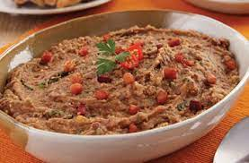

São José dos Campos

Bolinho Caipira:
São josé dos Campos localizado no vale do paraiba, onde se originou uma das tradições imperdiveis das feiras e festas juninas feito com farinha de milho, de mandioca e carne moida.
Galinhada:
Uma deliciosa mistora de frango refogado no azeite com arroz, tomate, linguiça e curry.


TUTU de feijão:
O TUTU de feijão! Que nada mais é, que uma junção do feijão com a farinha, mas com uma preparação e história diferentes do tropeiro!